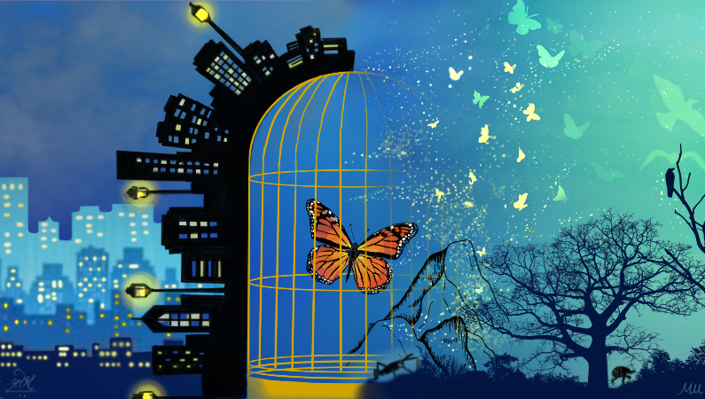

Apis mellifera- An astounding and venomous creature!
June 15, 2021 5:30pm IST One morning, I saw a person wandering around a beehive and getting bit by a bee. The pain, redness and other inflammatory reactions compelled me to think what could a bee, about 15mm, have injected that caused the immene pain and what caused it to sting the person in the first place?
Statistics suggests that about 80 percent of the bee sting symptoms are minor and include instant, sharp burning pain in the puncture, redness and swelling around the sting area. There are about 40-50 percent of cases where people have extreme redness with swelling at the site of the sting that gradually enlarges over the next day or two. There is a 10-15 percent chance of a severe allergic reaction (anaphylaxis) which is potentially life-threatening and requires treatment. The symptoms include itching, pale skin, difficulty in breathing, swelling of throat and tongue, nausea, unconsciousness etc.
This lethal and toxic bee venom of Apis mellifera is thus known as Apitoxin.
But what causes such deadly symptoms? The main components of Apitoxin are MCD (Mast Cell Degranulation) peptide, histamine, hyaluronidase, melittin, phospholipase A2 and acid phosphatase. The immense pain the victim experiences is primarily due to melittin. It is one of the smallest proteins known to fold spontaneously and is involved in immune responses against infectious diseases in honey bees. Histamine also contributes to pain and itching. MCD peptide causes the mast cells to degranulate, releasing histamine and vasoactive amines. The venom also has a ‘spreading factor’ which allows its other components to penetrate the victim’s tissues and is officially known as hyaluronidase. Phospholipase A2 is the major allergic component that destroys the cells, as the name suggests, by breaking up the phospholipids.
A bee stinger is divided into three components, one ‘stylet’ and two ‘lancets’. It is believed that a bee dies after stinging. Well, the worker bees are the ones who die. This is because the stinger is structured in such a way that once it punctures the human skin, it gets stuck and breaks off the rear end of the honey bee when trying to escape.A bee stinger is divided into three components, one ‘stylet’ and two ‘lancets’. It is believed that a bee dies after stinging. Well, the worker bees are the ones who die. This is because the stinger is structured in such a way that once it punctures the human skin, it gets stuck and breaks off the rear end of the honey bee when trying to escape.
A bee sting is truly a hard and painful experience both to the victim as well as to the bee itself!. Therefore, one should avoid going close to beehives as the bee stings when they perceive a threat.
The sting kills the bee, and it makes us wonder why an individual bee sacrifices itself, how this evolutionary strategy is successful. To answer this question we must have a better insight to the social organization of a bee hive.
You must have heard a phrase that drones do not have a father but a grandfather and female bees have both father and mother? Let’s have a closer look into the Bee family.
Three types of individuals are found in the colony of honey bees namely queen, drone and worker bees. The female bees ( queen and worker) are diploid having 32 Chromosomes and male bees (drones) are haploid having 16 chromosomes. This difference in the ploidy number is because ; female bees undergo meiosis while drones undergo mitosis for gamete formation. After fertilization, female bees are formed which restores the ploidy number. The unfertilized egg will form another drone via parthenogenesis (egg development without fertilization).
Bees are an integrative part of the ecosystem and play very big roles, there is a vast array of services they provide to humans.
The honey bee products are used to cure illnesses such as arthritis, infections and also in the treatment of symptoms associated with acute and chronic injuries such as pain. The treatment is formally known as Apitherapy. Although melittin can cause pain and inflammation, it has shown anti-inflammatory effects in small amounts. Multiple skincare companies have begun adding bee venom to products like serum and moisturizers. Bee venom has also shown positive effects on immune health. We can get a lot of utilities like honey, beeswax for cosmetics, candles, toilet goods, carbon paper etc.
There are indeed myriads of benefits from this toxic arthropod. It makes me wonder whether to appreciate or run away from it when I come across it the next time. What would you do?
References:
Author :
Shivangi Batish
BS-MS StudentIISER Tirupati
Related Articles
The Bee Dance
July 7, 2020
July 7, 2020
If you are a keen observer, then you must have seen honey bees (Apis sp.) waggling around. Ever wondered, what is the reason behind this? Is it just for fun? Or are the bees really inspired by Michael Jackson!? Well, these little creatures are much ...

Pattern play by Termites
April 1, 2021
In north-eastern Brazil, termite mounds are found in excess and due to termite foraging, they create an optimal hexagonal pattern such that every dirt mound has on average three to six neighbours. The general reason behind the formation of hexagonal patterning of termite mounds is...Read more!

The Beautiful Dragon
July 7, 2020
"Dragonflies hunt insects with great precision and have a 95% success rate and can eat 30 flies in a row," says Dr. Stacey Combes studying Dragonfly biomechanics at Harvard.